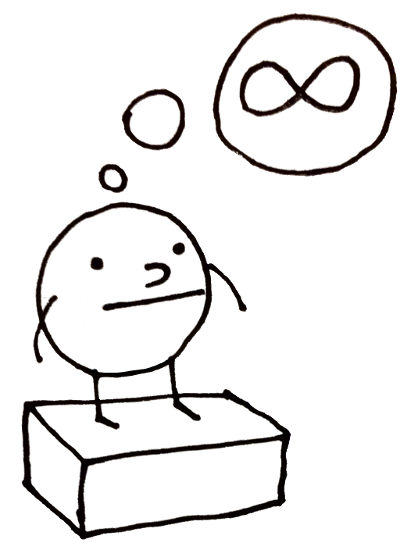

My theory of experience and agents
last updated (01/9/24)
Short version.
Reality is made out of experience (there is information to be interpreted) and a first agent able to observe this experience. Experience and agents are likely the same thing (like some RNA type thing, which has the dual property of being software and hardware simultaneously).
In the first step, there is experience and there is an agent that gets to have an experience. This agent has a special move called observation. When an agent observes, it is essentially differentiating a slice of experience, which results in new objects. Objects are themselves agents (they get to experience) but are simultaneously something new to be experienced. This new agent (any agent) also has the special move observe and so is also capable of creating new objects/experiences.

Complete version.
This is a minimal model that imagines a universe where the act of observation is the main mechanism behind generating novelty and new information. I must say and perhaps warn you that this borrows from a panpsychist view of reality in that it assumes that there is an original observer and an original experience (original as in singular and first of its kind). I am also using the word information loosely to describe phenomena that can be experienced and configured in distinct ways.
Reality is made of experience and observers. By this I mean to say that there is information to be interpreted and agents capable of processing this information via observation. An important piece of this imagination is that observers and experiences are actually the same thing, which I simply label as objects. This gives us a picture where objects are couplings that can both experience and be experienced. Indeed they are information that can bestow novelty to an observer but are also observers that can process novelty (by novelty I meant encountering of never before observed information). If you would like a mental map or analogy of what this might looks like, remember the RNA molecule which has the dual property of being a machine (replicating itself via its 3D configuration) and software (carrying information as a string of molecular symbols). So in this way; objects are machines in that they process information but also information in that they are something to be experienced.
Now lets describe the act of observing. In this view observing is the mechanism by which information gets processed and is probably what we mean by when we say we have "experiences". When an object observes a phenomena it is slicing a particular piece of the whole informational content of what is being experienced and processing it into something new: it interfaces with the imagination capacity of an object to transform it into something else. By taking that original piece of information and transforming it into a permutation of it, it is essentially generating a new object that has never existed before. In short and to make it clear, this means that an observer can interpret a piece of information to generate a slight (or maybe not so slight) variation of it. This new variant has a fraction of the informational content of the observed experience.
If we let this conception run in our mind you might end up with a story in which at generation 0 a single object existed which necessarily interpreted itself thereby creating secondary objects in generation 1. Let's also say that this first object at generation 0 carries 100% of the information content of reality, while at generation two, the information content is distributed among the created objects as they all carry pieces of the base experience. Generation 2 objects are then left to do their observations and if we skip to say, a thousand generations, then we quickly have a landscape of a ridiculous amount of unique objects. But remember; objects are both experiencers and something to be experienced by fellow objects. Each object is also necessarily unique as the exact same kind of observation can never be repeated.
We can also relate this picture of objects as akin to the memory of the universe. Indeed the collection of objects at generation n can be viewed as memory and traced back to a single lineage belonging to the original object. This also means that there is no destruction of information and that all information exists as permutations of an original source.
Another important distinction is that not all objects have equal observation capacity. As objects get generated downstream of the original observation they have less dimensions of imagination/interpretation. They have less creativity (lets say for now) compared to the founding object who has an unimaginable (haha) creative output. So this speaks to how the original object can perform a massive amount of computations(?) or permutations on a piece of information (as well as access to the majority of the information of what is observed) while the lower or further away layers from source have a greatly reduced amount of originality in terms of the objects that they can produce.
Generations can also be thought of as layers, where the first object is the base layer, and subsequent objects get assorted into their own specific layers according to the 'creativity/computation capacity' that they have.
It is my intuition that at a certain step of this story an object had to have created the building blocks of matter and its properties that physicists study today. I can also tell you that we humans are probably quasi infinetly far from the original observer in terms of computation capacity and originality as observers and that we also create objects or information, this is what we recall as memory. So our thoughts arent necesarily physically backed up somewhere in our brains but also we are creating information in etheric micro-dimensions!
Another thing Im agnostic to is if the act of observation is done in a single unit or tick of time like a turn based RPG or if this stuff is continuous and unquantifiable.
Observations are n of 1 events. An object can observe the whole observer-verse landscape, each of its observations is unique. n = 1. What changes is that not all observer will be capable of capturing the majority of the informational richness of an experienced. At each generation, observation gets nerfed and the experience that they are able to attend is only but a fraction of what it really is in base-line gen0 experience. This means that at the beginning there is maximum information state, there are quasi infinite experiences and observations to be had.
This is like a matrushka, an onion, or a self embedded Torus.
Image shown is "Ekathea" by Russian artist Konstantin Dimov